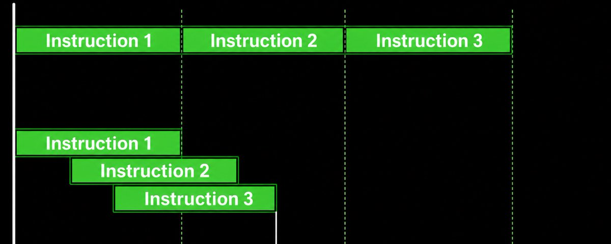
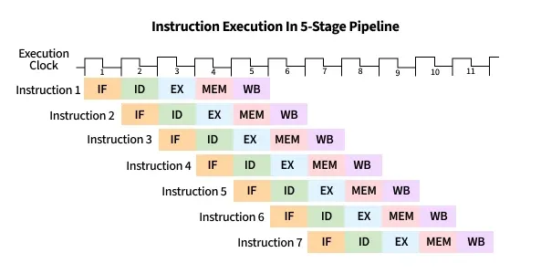
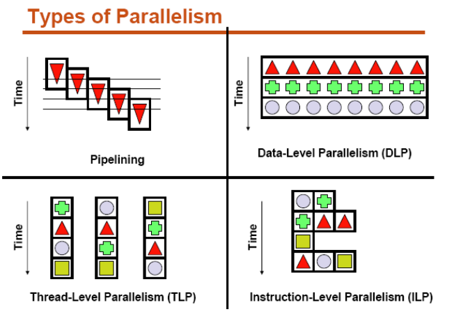
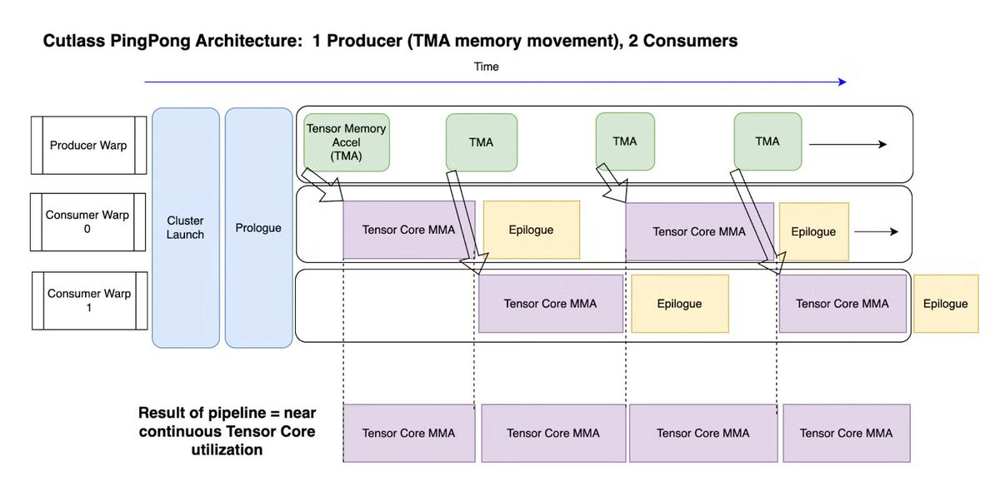

一个现代加速器每秒能执行天文数字级别的运算。问题在于，大多数运算依赖需要被搬运的数据。一次乘法可能只需几个周期，但从内存获取输入需要数百周期，在芯片间搬运张量需要数千周期。如果处理器等待每次搬运完成才启动下一项工作，几乎所有算力都会闲置。
计算速度和通信速度之间的差距是计算机体系结构的核心问题之一。让算术单元更快并不能解决它：事实上，更快的算术往往让问题更糟：处理器消耗数据越快，及时送达数据就越困难。解决方案是延迟隐藏（Latency Hiding）。
延迟是一次操作完成所需的时间，吞吐是系统在单位时间内能完成的操作数。 两者听起来密切相关，但并非同一回事。
假设一次内存请求需要300周期。如果处理器发出一条请求后等待300周期再发下一条，几乎做不了任何有用工作。但如果它能保持数百条独立请求同时在途，一旦流水线填满，几乎每个周期都能返回一个结果。每条请求的延迟仍然是300周期，没有任何东西变快了，但延迟不再限制吞吐。
这就是延迟隐藏的核心思想：当一个操作在等待时，处理器找到另一个可以执行的操作。 一个充分利用的处理器在任何时刻都有大量未完成的操作：有些在等内存，有些在芯片间传输，有些在执行算术，有些刚准备好开始。性能来自合理安排这些工作，让每个硬件单元总有事情可做。
延迟只有在存在独立工作时才能被隐藏。 考虑一条操作链，每条指令都依赖前一条的结果：处理器无法重叠它们，因为下一条指令确实没有它需要的信息。这是程序的关键路径，其延迟是根本可见的。
但大多数真实工作负载包含更多并行性。例如：不同张量元素可以独立计算、多个内存地址可以同时获取、一个tile在计算时另一个可以传输、一层的通信可以与另一层的计算重叠。
计算机体系结构通过几种方式暴露这种并行性：指令级并行（CPU乱序执行）、线程级并行（GPU多warp驻留切换）、软件流水线（显式重叠数据搬运和计算）。这些技术解决的是同一个底层问题：在启动一个慢操作和消费其结果之间创造足够的距离。
GPU的设计核心是让可用工作远超其执行能力。 一个GPU kernel可能启动数万个线程，这些线程被收集成warp，每个流式多处理器上驻留大量warp。每个周期，warp调度器寻找下一条指令已就绪的warp。
假设一个warp发起了全局内存加载，结果可能数百周期后才返回。GPU不会将warp保存到内存或执行操作系统上下文切换：它让warp的寄存器留在芯片上，开始从其他warp发射指令。 等调度器回到原始warp时，它的数据可能已经就绪。
这就是GPU性能常与occupancy（驻留warp数量）关联的原因。但occupancy只是手段而非目的：最大occupancy并不保证最大性能。 每个warp消耗寄存器，每个线程块消耗共享内存。增加驻留warp数会减少每个warp可用的资源。一个occupancy更低的kernel如果每条指令做更多工作、更充分地复用数据、或在每个warp内暴露足够的独立指令，可能反而跑得更快。

Warp调度只是延迟隐藏的一层。高性能GPU kernel还构建显式的流水线来搬运数据。
考虑分块矩阵乘法。基础实现：加载一个tile到共享内存 → 等待加载完成 → 执行矩阵乘 → 开始加载下一个tile。每次转换都有一段内存系统或矩阵硬件空闲的时间。
流水线实现则不同： 当矩阵单元处理当前tile时，内存系统正在将下一个tile加载到另一个缓冲区。计算完成时，下一个tile已经就绪，缓冲区交换角色。更高级的kernel可能保持多个未来tile同时在途。
增加流水线级数给内存更多响应时间，但也消耗更多共享内存和寄存器。正确的流水线深度取决于操作、张量形状、内存布局和处理器：没有通用的最优配置。

TPU从不同的架构方向面对同样的问题。 其矩阵单元能以极高速度消耗巨大的数据tile。一旦矩阵操作开始，硬件高效执行大量算术。困难在于：让输入在矩阵单元需要之前到达，并在输出阻塞未来工作之前将其移走。
TPU严重依赖编译器显式编排的执行。编译器知道未来操作需要哪些张量、它们在哪里、哪些传输可以与已在进行中的计算重叠。一个程序可能同时：将一个tile传输到本地内存、对另一个tile执行矩阵操作、对更早的结果运行向量操作、开始将完成的输出发送到别处。
GPU和TPU从相反方向接近延迟隐藏。 GPU传统上使用更多动态硬件调度，TPU传统上将更多调度暴露给软件。现代系统越来越多地结合两者：可编程加速器暴露异步操作，编译器负责协调日益专业化的硬件单元。

延迟隐藏有四个极限：
1. 并行性不足。 如果每个操作都依赖前一个结果，没有调度器能制造独立工作。
2. 存储限制。 在途操作需要寄存器、队列、缓冲区和簿记。最终处理器没有空间启动更多工作。
3. 带宽限制。 延迟隐藏可以覆盖数据到达所需的时间，但无法让内存接口每秒传输更多字节。一旦带宽饱和，发出更多请求只会造成拥塞而非额外重叠。
4. 同步开销。 屏障强制不同工作互相等待。过于宽泛的同步将小依赖变成全局停顿。
优化延迟隐藏需要对整个机器进行推理。 启动更多工作只有在它使用可用资源而不创造新瓶颈时才有价值。

参考：https://x.com/joefioti/status/2079962390754636271